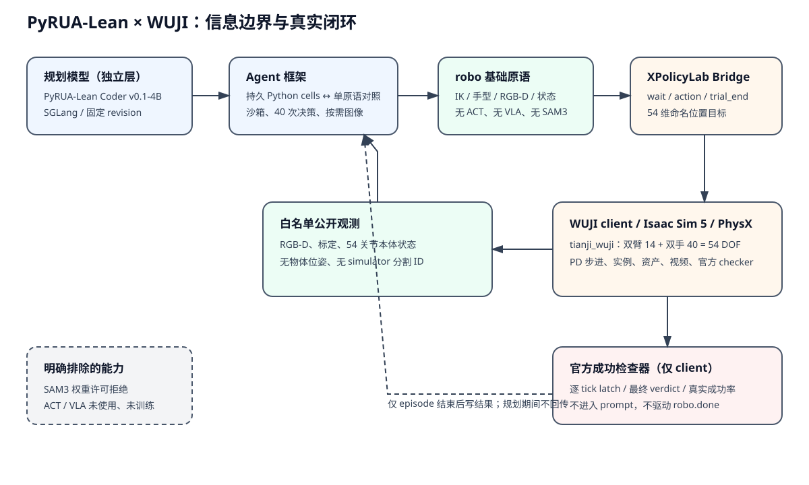

本页只把 WUJI 官方 checker 的真实自主闭环结果计为本项目成功率。论文在其他基准的数字、示范轨迹和单个视频不代替本项目的分母或成功率。
locate/segment。没有训练 PyRUA-Lean。PyRUA-Lean 是让规划模型编写并执行持久 Python cells 的 agent 框架，不是一个已训练的机器人控制网络。本次使用固定 revision 0f8014190d645392e9da2859f087e7b200849935 的 4B 规划器，不是论文 GPT-6 Astra，也没有在 WUJI 上训练。
模型在一个 cell 中可保留局部变量、循环调用 robo、检查返回的到位误差并重试，按需 show 声明相机图像。原语在 policy 侧通过 pyroki IK 和 WUJI bridge 执行，仿真 client 逐 tick 步进 PhysX。沙箱限制导入、文件访问和调用/时间预算。规划模型、agent 运行时、基础动作原语和可选 ACT/VLA 是四层不同组件，本次第四层未启用。
公平对照是同一规划器、原语、实例、预算和后端下的 cells 与 tool-calling：前者可在一次模型回复中执行多步 Python 逻辑，后者逐工具返回结果和状态。它不是 ACT 基线，也不能证明方法在其他机器人上的论文增益。

上游资料：源码 · 新机器人接入文档。固定 PyRUA-Lean commit fdf6e870654254e2c0c891ee407313fa48bdd0f9，WUJI commit 4c02b47c92127499ab867f81a28e7b3163af50f4。
实际 registry 加载得到 163 个注册键、71 个 hand_track 定义。五个候选均经过 Isaac Sim 5 / PhysX 初始化、真实首帧、有限关节状态和官方 checker 执行检查；保持动作不当作 agent 成功。候选均为 tianji_wuji，54 维关节位置动作，TE2 头相机和双腕相机；下表列出任务差异而非只按文件名判断。
| 任务/类型 | 官方成功条件 | 步数上限 | 实例/eval | 资产/示范 | 选择与排除理由 |
|---|---|---|---|---|---|
| hand_track.grasp_banana 单物体抓取提升 | lift_object{"min_lift_z_m": 0.5, "max_speed_m_per_s": 0.1} | 600 | 50 / 10 | front_table, object 未注册示范路径 | 本轮排除：预试在 0 步结束；保留该负面预试，不把可初始化当作可完成。 |
| hand_track.place_can_in_box 抓取并放入容器 | place_in_container{"object_name": "feast_soda_can", "container_name": "cardboard_box", "xy_half_extent_m": [0.108, 0.1105], "z_below_top_m": 0.06} | 1000 | 250 / 50 | front_table, feast_soda_can, cardboard_box, object 未注册示范路径 | 正式选中：单臂抓取与容器放置，20 个官方 eval 实例足够本轮配对评测。 |
| hand_track.bimanual_lift_box 双臂水平抬箱 | bimanual_lift{"min_lift_z_m": 0.5900000000000001, "min_axis_z_dot": 0.9, "max_speed_m_per_s": 0.1} | 1000 | 50 / 10 | front_table, object 未注册示范路径 | 正式选中：双臂协同、提升高度和箱体水平姿态共同构成成功条件。 |
| hand_track.stack_cubes 精确堆叠 | stack_cubes{"xy_tol_m": 0.025, "dz_min_m": 0.04, "dz_max_m": 0.056, "max_speed_m_per_s": 0.02} | 2000 | 50 / 10 | front_table, bottom_cube, top_cube, object 未注册示范路径 | 本轮排除：2.5 cm 水平容差和 2000 步预算需要更长调试；不是不能初始化。 |
| hand_track.pour_kettle_cup 双手长流程倒水 | kettle_pour{"max_xy_dist_m": 0.18, "min_kettle_above_cup_m": 0.06, "max_kettle_above_cup_m": 0.25, "min_cup_axis_z_dot": 0.85, "max_kettle_axis_z_dot": 0.6, "min_lean_toward_cup": 0.4, "max_spout_xy_dist_m": 0.13, "spout_local_offset_m": [-0.104, 0.0, 0.021]} | 3000 | 50 / 10 | front_table, desk_lamp, object, cup 有注册的官方示范；agent 不读取 | 正式选中：任务要求指定，包含双手持壶、壶嘴对杯及倾斜的长流程操作。 |
agent 只能看到公开任务说明、三路声明 RGB-D、相机标定、本体关节和手掌末端状态。深度反投影只使用这些声明数据；不提供物体真值位姿、仿真分割 ID 或官方 checker 反馈。robo.done 不存在，模型自称成功不记分。
| 原语 | 输入、坐标和单位 | 返回与限制 |
|---|---|---|
state | 左右 7 维臂关节和 20 维手关节，rad；手掌世界位姿 | 本体状态、当前控制步；没有任务成功标志 |
move_to | 左/右臂，世界坐标米，四元数 wxyz；默认位置容差 5 mm、旋转 0.05 rad | pyroki IK 后逐步执行，最多 200 步；返回 reached、位置/旋转误差、实际步数和原因 |
set_hand / release | open、pre_shape、close 或张开指定 20 维灵巧手 | 最多 100 步，返回关节最大误差；不是 grasp 成功判定 |
home | 左/右/双臂 | 回到 episode 初始关节位置；不是 teleport，也不重置官方成功 latch |
back_project / camera_meta | 声明相机的像素、内参和 camera-to-world 标定 | 深度米、世界坐标米；深度缺失或标定不可用则显式报错 |
show | 头/左腕/右腕相机 | 只返回声明图像；本次没有 SAM3 的 locate/segment |
54 维顺序为左臂 7、左手 20、右臂 7、右手 20，经名称映射到 TensorState，不能直接假定名称排序数组。单位为米/rad；基座到世界坐标和 xyzw/wxyz 均显式转换。实际 1 mm IK→54 维动作→PhysX 小运动预试：1 步，位置误差 0.0012420687180422247 m，旋转误差 0.00040060500073079737 rad；这只是原语测试，不是任务成功率。
| 接口:任务 | 成功/总数 | 成功率 | 95% Wilson CI | 失败类型 | 平均步数 | 规划调用 | 输入 tokens | 耗时(s) |
|---|---|---|---|---|---|---|---|---|
| cells:hand_track.bimanual_lift_box | 0/5 | 0.0% | [0.0%, 43.4%] | {"timeout": 2, "agent_finished_unsuccessful": 3} | 592.4 | 11.6 | 173742.8 | 302.81709461156277 |
| tools:hand_track.bimanual_lift_box | 0/4 | 0.0% | [0.0%, 49.0%] | {"timeout": 1, "agent_finished_unsuccessful": 3} | 500.25 | 25.25 | 398661.5 | 157.05618875823262 |
| cells:hand_track.place_can_in_box | 0/20 | 0.0% | [0.0%, 16.1%] | {"agent_finished_unsuccessful": 19, "timeout": 1} | 156.4 | 10.65 | 181447.25 | 288.594920210517 |
| tools:hand_track.place_can_in_box | 0/20 | 0.0% | [0.0%, 16.1%] | {"agent_finished_unsuccessful": 20} | 53.25 | 26.15 | 324183.0 | 96.19243586685043 |
数值为每任务每接口成功率、95% Wilson 区间、失败类型、平均控制步数、规划请求数、输入 tokens 和 policy 墙钟。中断 episode 的用量从 assistant 事件回补；若请求无响应会标记不完整，不把缺失用量当成 0。本地 SGLang 没有外部 API 账单，不能据此声称 GPU 免费。未重评 ACT，因此不引用此前 1/1 结果作正式基线。
逐集 planner 墙钟合计约 2.73 小时；GPU 机会成本不换算为虚构美元账单，本地 API 边际费用为 0。
| 任务 | 实例 | 接口 | 官方结果 | 结束类型 | 步数 | 规划调用 | 输入 tokens | 输出 tokens | 耗时(s) | 证据 |
|---|---|---|---|---|---|---|---|---|---|---|
| hand_track.bimanual_lift_box | i024 | cells | 失败 | timeout | 1000 | 17 | 248521 | 18851 | 298.36184549797326 | 视频 |
| hand_track.bimanual_lift_box | i029 | cells | 失败 | agent_finished_unsuccessful | 0 | 8 | 105619 | 28199 | 271.6442354102619 | 视频 |
| hand_track.bimanual_lift_box | i034 | cells | 失败 | agent_finished_unsuccessful | 262 | 10 | 121097 | 16153 | 179.0483898841776 | 视频 |
| hand_track.bimanual_lift_box | i039 | cells | 失败 | agent_finished_unsuccessful | 700 | 10 | 95067 | 26412 | 325.1258632959798 | 视频 |
| hand_track.bimanual_lift_box | i044 | cells | 失败 | timeout | 1000 | 13 | 298410 | 29579 | 439.9051389694214 | 视频 |
| hand_track.place_can_in_box | i024 | cells | 失败 | agent_finished_unsuccessful | 0 | 11 | 96223 | 10838 | 131.52142968028784 | 视频 |
| hand_track.place_can_in_box | i029 | cells | 失败 | agent_finished_unsuccessful | 0 | 6 | 67226 | 27771 | 260.39862606395036 | 视频 |
| hand_track.place_can_in_box | i034 | cells | 失败 | agent_finished_unsuccessful | 0 | 5 | 86198 | 29476 | 285.89669278869405 | 视频 |
| hand_track.place_can_in_box | i039 | cells | 失败 | agent_finished_unsuccessful | 0 | 5 | 47179 | 24901 | 231.09153121011332 | 视频 |
| hand_track.place_can_in_box | i044 | cells | 失败 | agent_finished_unsuccessful | 4 | 13 | 203661 | 22254 | 236.28093614522368 | 视频 |
| hand_track.place_can_in_box | i045 | cells | 失败 | agent_finished_unsuccessful | 1 | 18 | 287012 | 27788 | 277.486632630229 | 视频 |
| hand_track.place_can_in_box | i046 | cells | 失败 | agent_finished_unsuccessful | 0 | 4 | 40964 | 25253 | 231.32993884105235 | 视频 |
| hand_track.place_can_in_box | i047 | cells | 失败 | agent_finished_unsuccessful | 720 | 36 | 1181888 | 41428 | 1301.0623458749615 | 视频 |
| hand_track.place_can_in_box | i048 | cells | 失败 | agent_finished_unsuccessful | 0 | 3 | 17028 | 1793 | 15.363937660120428 | 视频 |
| hand_track.place_can_in_box | i049 | cells | 失败 | agent_finished_unsuccessful | 1 | 18 | 311131 | 35192 | 573.9268532120623 | 视频 |
| hand_track.place_can_in_box | i134 | cells | 失败 | agent_finished_unsuccessful | 0 | 18 | 190451 | 13816 | 121.24916168488562 | 视频 |
| hand_track.place_can_in_box | i139 | cells | 失败 | timeout | 1000 | 7 | 84010 | 11698 | 227.7501092888415 | 视频 |
| hand_track.place_can_in_box | i144 | cells | 失败 | agent_finished_unsuccessful | 0 | 5 | 51070 | 26582 | 248.616654407233 | 视频 |
| hand_track.place_can_in_box | i149 | cells | 失败 | agent_finished_unsuccessful | 301 | 14 | 307466 | 30695 | 371.5466156490147 | 视频 |
| hand_track.place_can_in_box | i154 | cells | 失败 | agent_finished_unsuccessful | 0 | 2 | 9513 | 3618 | 29.959211585111916 | 视频 |
| hand_track.place_can_in_box | i159 | cells | 失败 | agent_finished_unsuccessful | 0 | 4 | 43000 | 25240 | 238.23840574501082 | 视频 |
| hand_track.place_can_in_box | i164 | cells | 失败 | agent_finished_unsuccessful | 300 | 6 | 58837 | 12744 | 141.9229284268804 | 视频 |
| hand_track.place_can_in_box | i169 | cells | 失败 | agent_finished_unsuccessful | 0 | 5 | 68816 | 29013 | 285.93367688311264 | 视频 |
| hand_track.place_can_in_box | i174 | cells | 失败 | agent_finished_unsuccessful | 801 | 20 | 333380 | 25396 | 394.2548010526225 | 视频 |
| hand_track.place_can_in_box | i179 | cells | 失败 | agent_finished_unsuccessful | 0 | 13 | 143892 | 14317 | 168.0679153809324 | 视频 |
| hand_track.bimanual_lift_box | i024 | tools | 失败 | timeout | 1000 | 17 | 455449 | 7365 | 220.213 | 视频 |
| hand_track.bimanual_lift_box | i029 | tools | 失败 | agent_finished_unsuccessful | 600 | 27 | 469094 | 9164 | 163.00050038006157 | 视频 |
| hand_track.bimanual_lift_box | i034 | tools | 失败 | agent_finished_unsuccessful | 0 | 26 | 207858 | 8717 | 85.49996291100979 | 视频 |
| hand_track.bimanual_lift_box | i039 | tools | 失败 | agent_finished_unsuccessful | 401 | 31 | 462245 | 10387 | 159.51129174185917 | 视频 |
| hand_track.place_can_in_box | i024 | tools | 失败 | agent_finished_unsuccessful | 0 | 15 | 103866 | 5516 | 67.44978241994977 | 视频 |
| hand_track.place_can_in_box | i029 | tools | 失败 | agent_finished_unsuccessful | 0 | 43 | 820028 | 12579 | 161.65469922497869 | 视频 |
| hand_track.place_can_in_box | i034 | tools | 失败 | agent_finished_unsuccessful | 0 | 18 | 137016 | 6607 | 58.4460083800368 | 视频 |
| hand_track.place_can_in_box | i039 | tools | 失败 | agent_finished_unsuccessful | 0 | 19 | 156383 | 9439 | 83.78720851801336 | 视频 |
| hand_track.place_can_in_box | i044 | tools | 失败 | agent_finished_unsuccessful | 0 | 23 | 197090 | 5819 | 55.5481206132099 | 视频 |
| hand_track.place_can_in_box | i045 | tools | 失败 | agent_finished_unsuccessful | 400 | 43 | 724206 | 11929 | 176.8894453109242 | 视频 |
| hand_track.place_can_in_box | i046 | tools | 失败 | agent_finished_unsuccessful | 200 | 35 | 484083 | 11179 | 132.90365648223087 | 视频 |
| hand_track.place_can_in_box | i047 | tools | 失败 | agent_finished_unsuccessful | 300 | 35 | 614432 | 9401 | 142.93764021713287 | 视频 |
| hand_track.place_can_in_box | i048 | tools | 失败 | agent_finished_unsuccessful | 0 | 11 | 81401 | 8542 | 73.06519568897784 | 视频 |
| hand_track.place_can_in_box | i049 | tools | 失败 | agent_finished_unsuccessful | 0 | 29 | 336230 | 8619 | 88.47834650799632 | 视频 |
| hand_track.place_can_in_box | i134 | tools | 失败 | agent_finished_unsuccessful | 0 | 22 | 176137 | 7263 | 65.44956296123564 | 视频 |
| hand_track.place_can_in_box | i139 | tools | 失败 | agent_finished_unsuccessful | 61 | 40 | 510918 | 16027 | 164.93697924911976 | 视频 |
| hand_track.place_can_in_box | i144 | tools | 失败 | agent_finished_unsuccessful | 2 | 40 | 638920 | 12022 | 130.10959887411445 | 视频 |
| hand_track.place_can_in_box | i149 | tools | 失败 | agent_finished_unsuccessful | 1 | 24 | 326367 | 8044 | 101.44271103898063 | 视频 |
| hand_track.place_can_in_box | i154 | tools | 失败 | agent_finished_unsuccessful | 0 | 24 | 236258 | 6664 | 64.1923651508987 | 视频 |
| hand_track.place_can_in_box | i159 | tools | 失败 | agent_finished_unsuccessful | 100 | 17 | 174079 | 6925 | 75.59447456523776 | 视频 |
| hand_track.place_can_in_box | i164 | tools | 失败 | agent_finished_unsuccessful | 0 | 21 | 175760 | 6495 | 60.1061266050674 | 视频 |
| hand_track.place_can_in_box | i169 | tools | 失败 | agent_finished_unsuccessful | 1 | 19 | 205251 | 8021 | 77.34177959105 | 视频 |
| hand_track.place_can_in_box | i174 | tools | 失败 | agent_finished_unsuccessful | 0 | 35 | 317632 | 9510 | 87.39356535580009 | 视频 |
| hand_track.place_can_in_box | i179 | tools | 失败 | agent_finished_unsuccessful | 0 | 10 | 67603 | 6590 | 56.12145058205351 | 视频 |
| 任务 | 接口 | 官方结果 | 步数 | 结束类型 | 证据 |
|---|---|---|---|---|---|
| hand_track.grasp_banana | cells | 失败 | 0 | agent_finished_unsuccessful | 自主闭环视频 |
| hand_track.bimanual_lift_box | cells | 失败 | 400 | agent_finished_unsuccessful | 自主闭环视频 |
| hand_track.place_can_in_box | cells | 失败 | 300 | agent_finished_unsuccessful | 自主闭环视频 |
| hand_track.place_can_in_box | tools | 失败 | 0 | agent_finished_unsuccessful | 自主闭环视频 |
| hand_track.place_can_in_box | tools | 失败 | 0 | agent_finished_unsuccessful | 自主闭环视频 |
| hand_track.place_can_in_box | tools | 失败 | 0 | agent_finished_unsuccessful | 自主闭环视频 |
| hand_track.place_can_in_box | tools | 失败 | 0 | agent_finished_unsuccessful | 自主闭环视频 |
| hand_track.place_can_in_box | tools | 失败 | 201 | agent_finished_unsuccessful | 自主闭环视频 |
| hand_track.pour_kettle_cup | cells | 失败 | 200 | agent_finished_unsuccessful | 自主闭环视频 |
按锁定 manifest 顺序合并 cells 与 tool-calling 的完整 episode；标题栏显示实例、接口、官方结果和步数。失败、超时和 0 步不删减，合辑不增加评测样本，也不是状态回放。进行中只显示已经凑齐的任务。
当前没有官方成功的 episode，因此没有成功视频可展示；以下仅展示真实失败，不伪造成功。
论文在 LIBERO-PRO、RoboTwin 2.0、RoboCasa365 的 700 个实例上报告 71.7%（tool-calling 63.1%）；作者 RoboDojo 运行报告 51.62%。这些数字不参与本页任何 WUJI 计算，规划器与机器人也不同。
离线版本包含本 HTML、架构图、派生 JSON 与公开视频，无凭据、私有原始示范或绝对服务器路径。